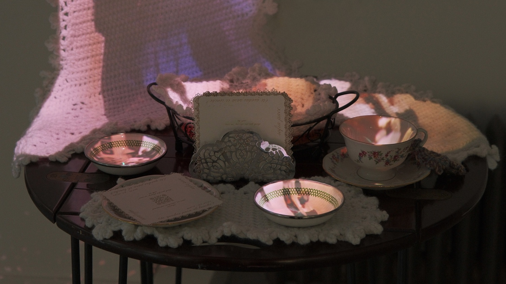
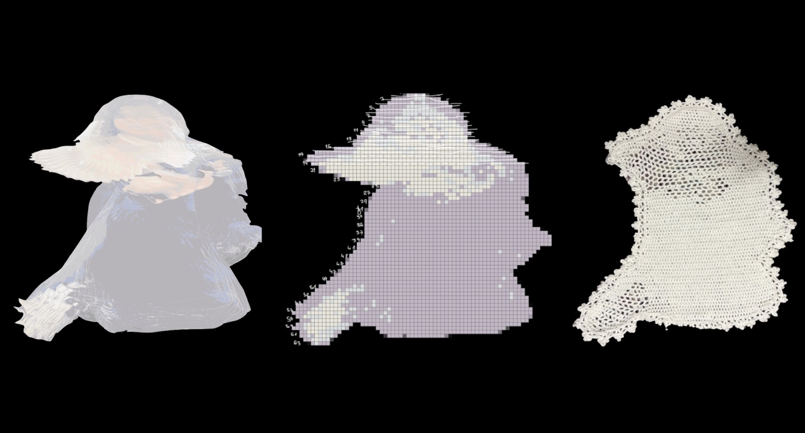
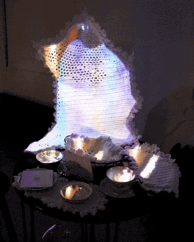
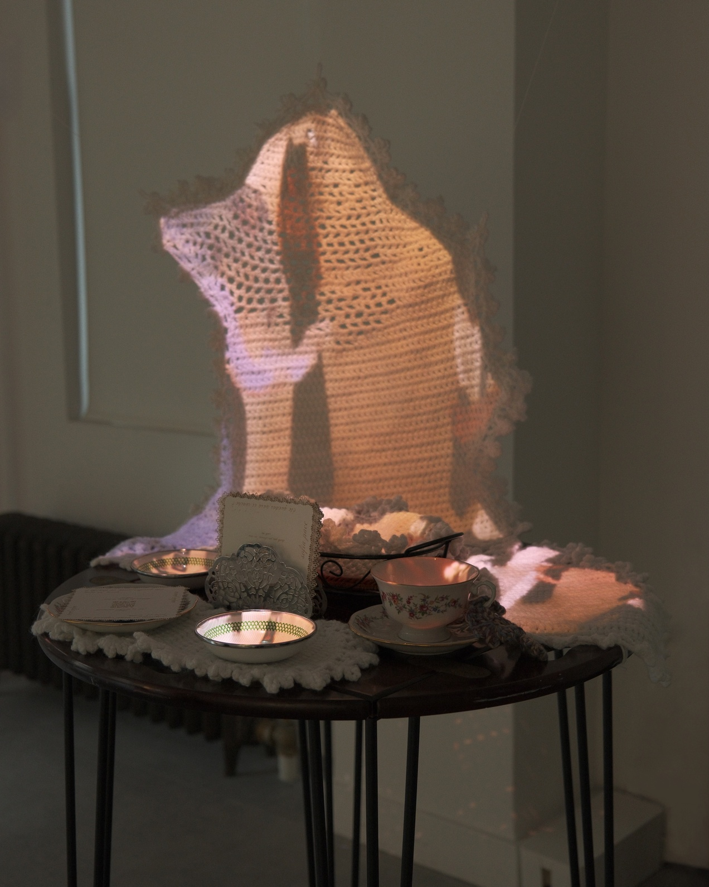

¿te quedas para el lonche?
¿te quedas para el lonche? is an interactive installation that reimagines the family table as a site of memory, ritual, and collective festivity.
Rooted in the Peruvian tradition of an evening merienda, the work invites audiences into a space of informal
gathering and participation.
At its center, a crocheted tablecloth becomes a living, responsive surface, animated through
projection and the movement of surrounding bodies, as their physical energy accumulates and is shared. This
real-time interaction grounds the audience in the present, while familiar household objects and recorded home
audio evoke traces of tradition, memory, and the past.
The installation considers how we inhabit
shared space: how rituals of togetherness change over time, and how much remains the same.

Adobe Premiere Pro and Adobe Photoshop were used to process and abstract archival media into motion trails
that emphasize accumulation and bodily trace.
This effect is extended in the live installation through
TouchDesigner, utilizing similarly abstracted real-time video and projection mapping.


The project centers on transforming bodily motion into both digital and physical forms. The crochet pieces,
structured as tablecloth-like surfaces, function as responsive elements that visualize accumulated movement
and shared physical presence.
All visual and audio media originate from personal and family archives spanning different time periods.
Utilizing a webcam and projection, visitors are placed alongside these archival images, creating a shared
space where past and present bodies coexist and interact.